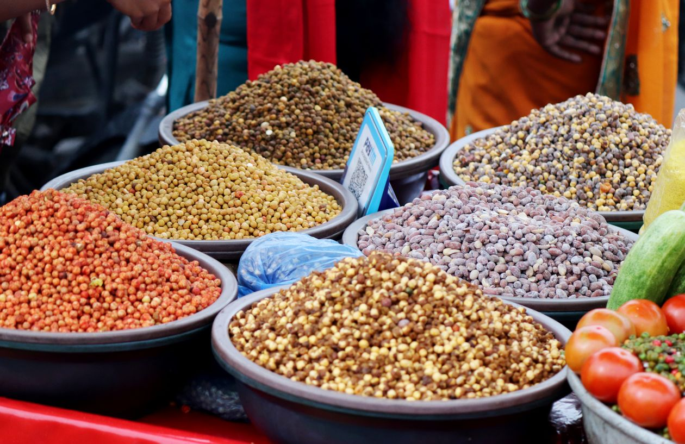
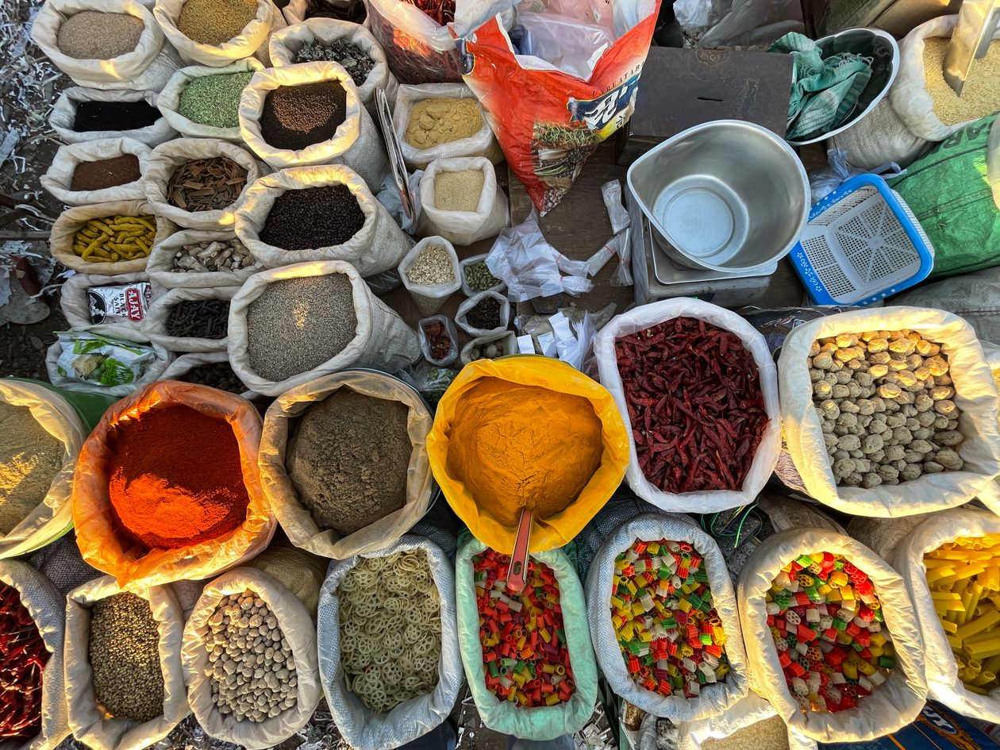

№ 2 · The Order Book
Three orders, entered as they happened.
An order in this book is not finished when it is paid. It is finished when the last glass is drunk and the entry can be written honestly: who asked, what was ground, what it came to. These are last season's three biggest pages.
The Shivratri Night Batch
The ask. The temple-lane trust keeps a free thandai stall through the Mahashivratri night, when the queue for the temple runs past my counter until dawn. They asked for 60 litres — 300 glasses — and one condition: the last glass of the night must taste like the first.
The doing. Sixty litres is two days on the stone, so the paste was ground on the Thursday and Friday, 3 kilos of almonds alone, and kept in glass under refrigeration — paste keeps ten days, so this was well inside its life. The milk was mixed in three lots through the night itself, never one great vessel at dusk: a mixed drink keeps two days, but a night queue deserves better than the limit.
The outcome. Three hundred glasses between 9 p.m. and the dawn aarti, and the stall's book and mine agree to the glass. The trust has entered the same order for this year — it is the first line of the 2027 book.
“Sixty litres, through the whole Shivratri night, and the last glass tasted like the first. Prasad ji showed me the page where my order was written before he showed me the bill. That is why the lane trusts his stone.”
A Hotel's Holi Brunch
The ask. A ghats-side hotel wanted thandai for its Holi brunch — 45 litres ready to pour — and 20 jars of paste in the rooms, so guests could make a glass the next morning. Their first question was whether I could deliver the drink three days early, to "get it out of the way".
The doing. I said no, and showed them the keeping line in the ledger: a mixed drink keeps two days, and a brunch deserves a drink mixed the day before, not a drink at the edge of its life. We ground paste for all 85 litres' worth across three days — the paste keeps ten — and mixed the 45 litres on the Sunday, for the Monday brunch. The jars went up to the rooms the same evening.
The outcome. The brunch poured 225 glasses; the hotel counted eleven guests who asked at the desk where the thandai came from. The refusal is in this entry because it is part of the work: the day I start mixing early for convenience, the ledger is decoration.
“He refused our first delivery date, politely, with the page open at the keeping times. Then he delivered a better brunch than the one we had planned. Our guests now ask for 'the ledger man's thandai' by name.”

The Lane's Own Holi
The ask. Thatheri Bazar plays its own Holi the way it has for fifty years: the lane committee collects from every house, and one counter serves the whole lane. Last year the collection came to 120 litres — 600 glasses — the largest single entry this book has held.
The doing. A hundred and twenty litres is three days on the stone at the line's honest pace, Friday to Sunday, both stones, four of us. Six kilos of almonds, soaked in relays so no batch waited skinned and drying. The milk was mixed in four lots on the Sunday night and the Monday morning, and the counter opened at eight.
The outcome. Six hundred glasses, and the last litre was poured at twenty past twelve — the lane drank the book dry by noon, which the committee has decided is the correct ending. This year's collection is already open; the committee's page is the last one in the book, and it is not full yet.
“Every house in the lane puts money in, so every house reads the page. Six hundred glasses, the accounts read aloud at the counter, and nothing left by noon. That is a Holi we can show our children.”
